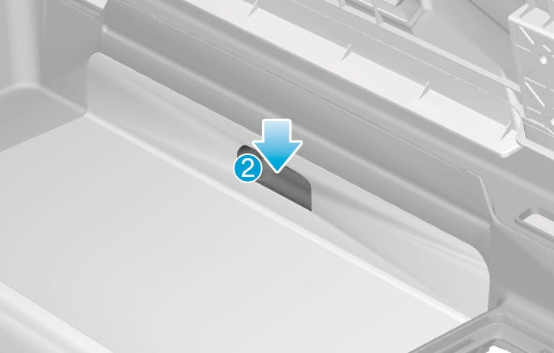
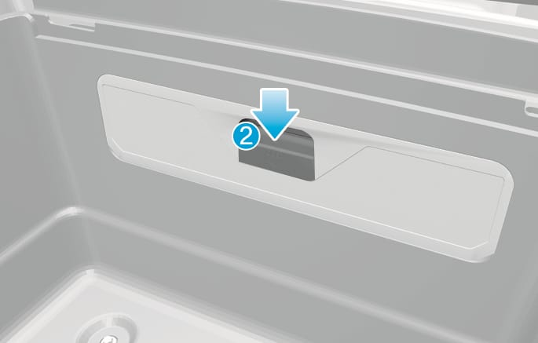
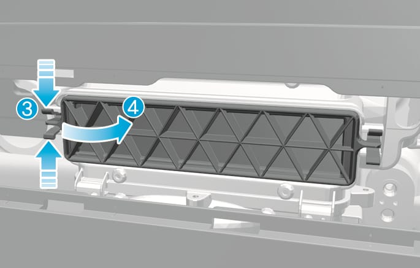
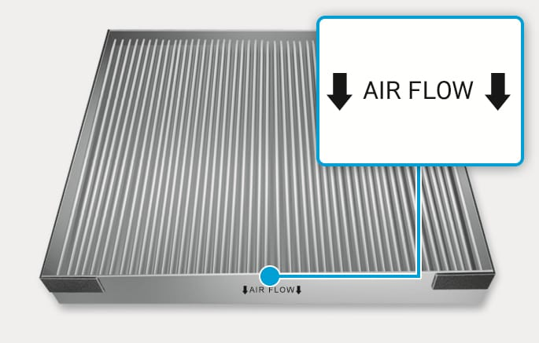
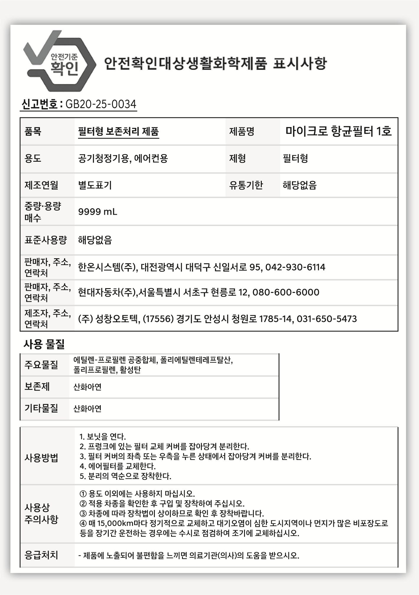

공조 장치용 에어 필터 교체하기
12개월 마다 공조 장치용 에어 필터를 교체하십시오.
-
대기 오염이 심한 도시나 비포장도로 등 먼지가 많은 장소를 자주 주행하는 경우 수시로 에어 필터를 점검하고 필요 시 조기에 교체하십시오.
-
에어필터를 직접 교체할 때 다른 부품이 손상되지 않도록 주의하십시오.
-
후드를 열고, 프론트 트렁크 열림 레버(1)를 위로 눌러 커버를 들어올리십시오.

2C_AirFilterReplacementProcedure
-
프론트 트렁크 안에 있는 손잡이(2)를 잡아당겨 커버를 분리하십시오.
-
안쪽에 있는 에어 필터 커버가 드러납니다.
A타입
2C_AirFilterReplacementProcedure_1
B타입
2C_AirFilterReplacementProcedure_2
-
-
에어 필터 커버 왼쪽 손잡이(3)를 누른 상태에서 잡아당겨 커버를 분리하십시오(4).
-
에어 필터 커버가 분리되며 에어 필터가 드러납니다.

2C_AirFilterReplacementProcedure_3
-
-
사용한 에어 필터를 꺼낸 후 새 에어 필터를 설치하십시오.
-
화살표 표시(↓)가 아래를 향하도록 설치하십시오.
에어 필터의 설치 방향에 주의하십시오.
-
설치 방향이 바르지 않은 경우 소음 및 성능 저하가 발생할 수 있습니다.

2C_AirFilterReplacementCaution
-
-
-
분해의 역순으로 커버를 설치하십시오.

1C_LabelSubjectToSafetyConfirmation